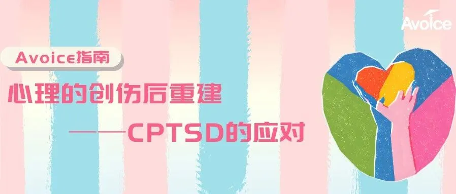
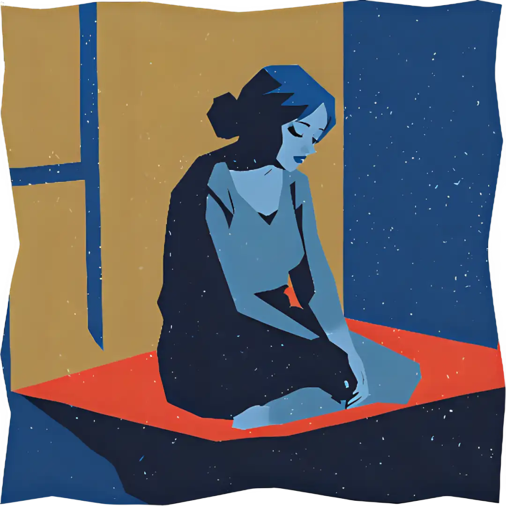
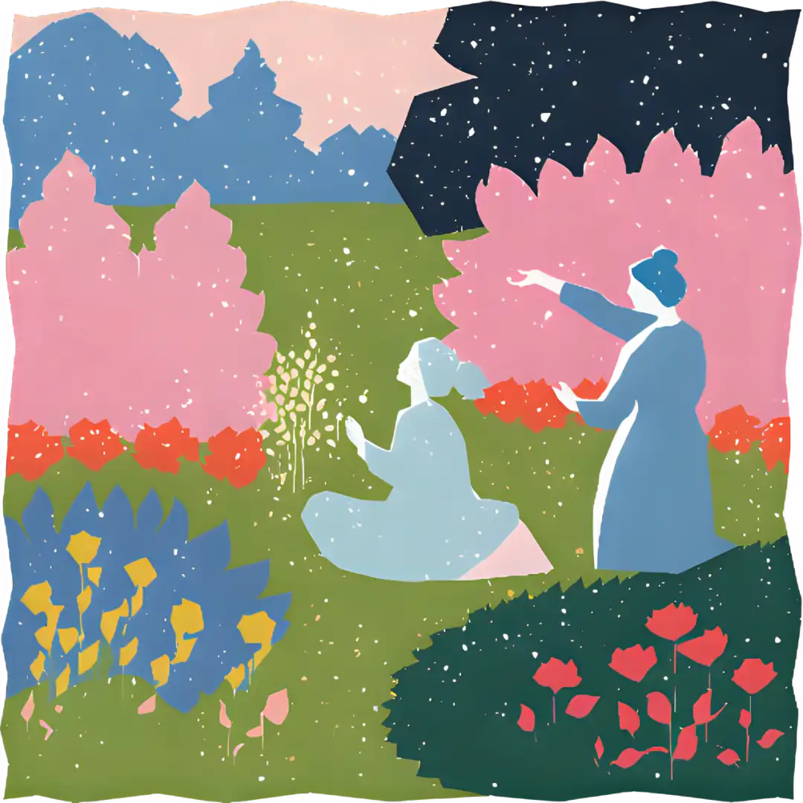

Part.1
复杂性创伤后应激障碍（CPTSD）概述
生活中，有一些事件会让我们有不好的心情，比如不小心摔碎了碗，被陌生的狗吠叫，被亲人责怪，这些虽然让我们的心情变糟糕了，但是我们大多数人都可以经过自己的调节调整心情状态。有些事则会对我们有负面影响，比如被欺骗，被羞辱，被骚扰，甚至给我们留下心理创伤，一想到这件事就非常难过，愤怒，挫败，还对我们的未来生活也产生了不好的影响，比如觉得某个群体都不是好人，不敢再相信别人，对某些事有超乎寻常的敏感等等……
换言之，我们与世界的连接产生了问题。大多数连接与人际关系相关，除了会造成PTSD（创伤后应激障碍）的车祸，空难，性侵等，许多看似没有那么严重的事件的长期存在同样会造成CPTSD(复杂性创伤后应激障碍)。 CPTSD是一种更加隐蔽，造成事由严重程度小于PTSD事由严重程度，却甚至具有比PTSD更加严重的影响和后果的创伤症候群。创伤性事件可以被分为两类，其中II型创伤，又称“复合型创伤“，由Judith Herman在《创伤与复原》中正式提出。这类创伤往往由生活中持续的慢性应激事件引发，包括持久的、反复的虐待和暴力，或长期屈从某种危险关系不能摆脱，如长期遭受家庭暴力、童年时期的忽视、生活在战乱国家的难民等。 II型创伤的特点是：创伤形成的时间久，对个体影响深远，一般难以自行康复；症状表现复杂多样。

Part.2
连接受损与情绪调节障碍
与他人连接的体验满足了我们想要充满活力的渴望。自我和他人连接能力的受损，以及随之而来的活力减弱，是隐藏在许多心理和生理问题背后的维度。不幸的是，我们常常没有意识到，这种潜在的阻碍使我们无法体验到渴望的连接与活力。
神经情感关系模型（Neuro Affective Relational Model，NARM） 的目标是处理这些失调、中断和扭曲，同时不断地支持建立健康的连接和保持活力的发展。NARM 认为存在五种生物学基础上的核心需要，包括连接、协调、信任、自主及爱-性的需要，它们对我们生理和情感的健康是至关重要的。当生物学基础上的核心需要没有得到满足时，可预测的心理和生理症状就会出现： 自我调节、自我意识和自尊都会受到损害。作为成年人，五种适应性生存方式越多地支配我们的生活，我们就越与我们的身体失去连接，我们的认同感就越扭曲，就越不能调节自己。虽然我们能部分地感受到生存方式及其生理模式的限制，但是我们害怕超越它。当我们认同了一种生存方式时，往往会停留在习得的限制和相应的自我强加的局限中，丧失了我们连接的能力和活力。
简而言之，自我调节是指我们累的时候可以睡觉，紧张时可以用健康的方式释放压力。情感调节涉及如何管理我们极为丰富的情感：悲伤、快乐、愤怒、兴奋、挑战和恐惧。当我们感觉不到自己的情绪时，当我们被情绪压倒时，当情绪不能有效处理时，情感失调的症状就产生了。对于我们的幸福来说，能够控制我们积极和消极情绪的强度是至关重要的。当我们不能管理强烈或有困扰的情绪时，或者感到焦虑、抑郁时，我们就处于情感失调状态。紊乱的睡眠或饮食模式、焦虑、惊恐发作、强迫行为、抑郁和成瘾都是一些比较常见的情感失调症状。在CPTSD造成的情感失调下，人们会感到极大的，无法调节的痛苦，这对人们的生活造成了很大的负面影响。
Part.3
CPTSD 的三阶段干预模式
在CPTSD的干预中，除了需要帮助个体缓解PTSD的症状，还需要帮助其重建自主感与控制感，学习情绪调节等技能以及建立健康积极的人际模式等。 Herman(1992b）根据CPTSD的定义及症状，认为造成心理创伤的核心是自主权的丧失及与他人情感联系的中断。基于此，她提出创伤的恢复主要有三个阶段：安全的建立、回顾与哀悼、重建与正常生活的联系，通过这三个阶段使创伤人群最终回复到 “平常人”的状态（Herman，1992b）
Herman提出了三阶段模式：第一阶段即稳定化阶段，主要在于帮助个体建立安全感，同时训练个体的相应技能（例如：情绪识别及表达的能力、人际交往能力等）。这一阶段能够帮助个体获得安全感与掌控感，能够具备一定的特定技能与自我效能去面对后面创伤处理阶段可能出现的不适，同时使后面的阶段更加有效；第二阶段为创伤处理阶段， 这一阶段主要是针对创伤相关的记忆进行工作，通过暴露、叙事等方式帮助个体适应在安全环境下面对创伤经验，重建对于创伤的认知，将创伤经历整合到生命历程之中；第三个阶段为巩固与促进转化阶段，这个阶段治疗师主要帮助个体巩固在治疗中习得的情绪、社交等技能，并且能够将这些内容应用于更广阔的现实生活中，以处理和应对新的挑战。同时，第三阶段也是一个补充阶段，可以排查CPTSD干预时可能忽略的其他心理问题。

Part.4
心理援助的路径与建议
当遭遇创伤时，如果对身心造成的影响极度严重，如造成抑郁症，可能需要前往精神科医院进行相关诊断与治疗，如服用精神药物，参加心理治疗等。如果经过诊疗和评估后可由心理咨询等手段缓解，则可以寻找相关方向的心理咨询师进行咨询，通过心理咨询缓解轻度到中度的心理失调。如果经评估后不需要心理咨询，可以向朋友倾诉，多运动，写情绪日记（我想到…我感觉…我的感受是…）等方式缓解负面情绪。当情况超出自己的处理能力范围时，请积极寻求心理援助（拨打心理热线，寻求精神科医生，心理治疗师，心理咨询师的帮助等等）。
要时刻记住，你是值得被爱，值得一切好的东西的，你是珍贵的存在，你独一无二，有自己的晦暗和皎洁，这都独属于你。 无论发生什么事情，自己永远是第一位的，要重视自己的感受，尊重自己的想法，察觉自己的感觉，调整自己的状态，并且永远爱自己，尊重自己，珍惜自己。遇到困难，请积极联络一切可以支持到你的力量，包括我们。
参考文献
撰稿｜倪慧婷
排版&封面｜吴雨桐
图片｜Freepik